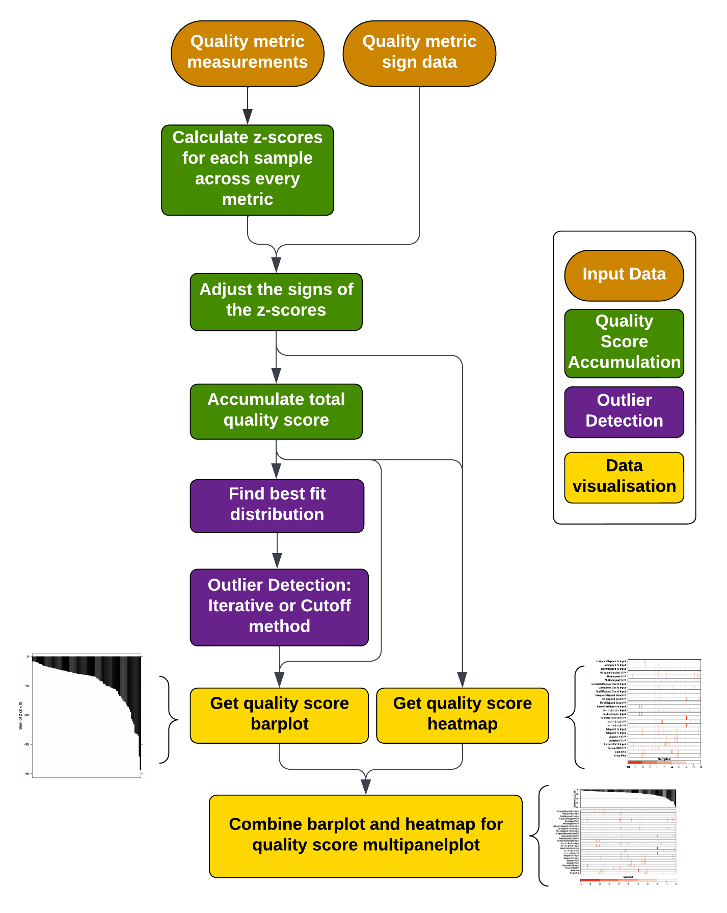

Introduction to omicsQC
Intro_to_omicsQC.RmdIntroduction
OmicsQC is a package designed to analyze quality control metrics for multi-sample studies and nominate putative outlier samples for exclusion using unbiased statistical approaches. The package can be subdivided into three parts: quality score calculation, outlier detection, and data visualization. The flowchart below illustrates how these parts interact and the flow of data throughout the package. The package comes with example data, consisting of 100 samples from a recent profiling study that all have been scored according to 26 quality control metrics.

Generation and aggregation of z-scores
To get a total score for the quality of a sample, this package will calculate the z-score of each test metric for each sample, correct for the directionality of each metric, and aggregate the z-scores by the sum across metrics. This package can be used independent of test metrics used.
Calculation of z-scores
zscores.from.metrics takes quality control data for each
sample and calculates the z-score across each metric. Each row of
qc.data should correspond to a sample, and each column to a
test metric. An example input dataframe can be seen below.
| UniquelyMapped.Percent.Input | Unmapped.Percent.Input | MultiMapped.Percent.Input | UniquelyMapped.Percent.IP | Unmapped.Percent.IP | MultiMapped.Percent.IP | UniquelyMapped.Count.Input | Unmapped.Count.Input | MultiMapped.Count.Input | UniquelyMapped.Count.IP | Unmapped.Count.IP | MultiMapped.Count.IP | FailedToDetermine.Input | 1++,1–,2+-,2-+.Input | 1+-,1-+,2++,2–.Input | FailedToDetermine.IP | 1++,1–,2+-,2-+.IP | 1+-,1-+,2++,2–.IP | Adapter1.percent.Input | Adapter2.percent.Input | Adapter1.percent.IP | Adapter2.percent.IP | PercentEK12.Input | PercentEK12.IP | Bulk.Rho | Array.Rho | |
|---|---|---|---|---|---|---|---|---|---|---|---|---|---|---|---|---|---|---|---|---|---|---|---|---|---|---|
| CPCG0100 | 70.25 | 10.97 | 18.79 | 71.43 | 18.94 | 9.63 | 19390677 | 3026043 | 5184967 | 35552770 | 9427024 | 4795939 | 0.1052 | 0.0561 | 0.8387 | 0.0859 | 0.0876 | 0.8264 | 37.29189 | 37.13687 | 11.174902 | 12.12284 | 10.088863 | 17.83939 | 0.6871488 | 0.5134328 |
| CPCG0183 | 69.29 | 8.75 | 21.95 | 76.34 | 12.32 | 11.34 | 21602350 | 2729165 | 6845636 | 30383237 | 4902919 | 4514371 | 0.1128 | 0.0418 | 0.8453 | 0.1000 | 0.0943 | 0.8057 | 22.18476 | 22.30754 | 9.909489 | 11.40783 | 6.695480 | 11.11634 | 0.6792404 | 0.5317954 |
| CPCG0184 | 64.60 | 11.24 | 24.15 | 62.30 | 15.82 | 21.88 | 29991436 | 5220018 | 11212198 | 34749241 | 8820783 | 12206427 | 0.1851 | 0.0379 | 0.7769 | 0.1049 | 0.0673 | 0.8279 | 33.41293 | 33.27873 | 17.675824 | 18.62967 | 7.911547 | 12.86091 | 0.7057109 | 0.5323726 |
| CPCG0191 | 64.12 | 13.95 | 21.94 | 77.26 | 10.66 | 12.08 | 39537338 | 8598400 | 13522075 | 40261018 | 5552929 | 6295091 | 0.1993 | 0.0412 | 0.7595 | 0.1194 | 0.0640 | 0.8166 | 42.73819 | 42.77692 | 23.696300 | 24.86895 | 4.845386 | 10.48673 | 0.6795978 | 0.4941515 |
| CPCG0192 | 64.38 | 13.01 | 22.62 | 79.51 | 7.97 | 12.52 | 39035170 | 7888213 | 13713112 | 38755562 | 3883013 | 6102481 | 0.3495 | 0.0405 | 0.6099 | 0.1522 | 0.0764 | 0.7714 | 38.90706 | 38.96469 | 17.103888 | 18.34758 | 4.815169 | 11.28928 | 0.6795978 | 0.4941515 |
| CPCG0196 | 64.85 | 13.58 | 21.57 | 69.92 | 20.30 | 9.77 | 29623574 | 6200466 | 9853011 | 51581803 | 14978568 | 7209183 | 0.1721 | 0.0472 | 0.7807 | 0.0913 | 0.0692 | 0.8395 | 37.05674 | 36.74628 | 22.523467 | 23.25110 | 8.992902 | 15.51477 | 0.7109169 | 0.5246630 |
zscores <- zscores.from.metrics(qc.data = example.qc.dataframe);The function returns a dataframe containing the z-scores for each sample and test metric. The example data in this package would return the dataframe below.
| UniquelyMapped.Percent.Input | Unmapped.Percent.Input | MultiMapped.Percent.Input | UniquelyMapped.Percent.IP | Unmapped.Percent.IP | MultiMapped.Percent.IP | UniquelyMapped.Count.Input | Unmapped.Count.Input | MultiMapped.Count.Input | UniquelyMapped.Count.IP | Unmapped.Count.IP | MultiMapped.Count.IP | FailedToDetermine.Input | 1++,1–,2+-,2-+.Input | 1+-,1-+,2++,2–.Input | FailedToDetermine.IP | 1++,1–,2+-,2-+.IP | 1+-,1-+,2++,2–.IP | Adapter1.percent.Input | Adapter2.percent.Input | Adapter1.percent.IP | Adapter2.percent.IP | PercentEK12.Input | PercentEK12.IP | Bulk.Rho | Array.Rho | |
|---|---|---|---|---|---|---|---|---|---|---|---|---|---|---|---|---|---|---|---|---|---|---|---|---|---|---|
| CPCG0100 | 0.5448279 | -0.2092575 | -0.5398954 | 0.2808877 | 0.0305740 | -0.7730446 | -1.1795856 | -0.9100092 | -1.2412323 | 0.0342785 | -0.0537049 | -0.5359233 | -0.7183556 | 0.1187405 | 0.7065515 | -0.2352108 | -0.0394160 | 0.2638734 | 0.1661573 | 0.1624467 | -0.9010710 | -0.9246914 | 0.8904284 | 0.7404171 | 0.1709534 | 0.4181559 |
| CPCG0183 | 0.4128684 | -0.7502515 | 0.0112496 | 0.7458771 | -0.5547355 | -0.3739424 | -1.0165807 | -0.9877796 | -0.9230678 | -0.2689982 | -0.5357854 | -0.6190383 | -0.6594594 | -0.4550984 | 0.7585148 | -0.0385626 | 0.1614107 | -0.0382884 | -0.7802375 | -0.7814451 | -1.0311481 | -1.0001724 | -0.0273160 | -0.2719865 | 0.0844681 | 0.7407992 |
| CPCG0184 | -0.2318089 | -0.1434609 | 0.3949582 | -0.5837463 | -0.2452818 | 2.0860207 | -0.3982875 | -0.3352732 | -0.0864865 | -0.0128615 | -0.1183048 | 1.6515511 | -0.0991704 | -0.6115999 | 0.2199859 | 0.0297762 | -0.6478908 | 0.2857692 | -0.0768423 | -0.0831253 | -0.2328137 | -0.2377904 | 0.3015706 | -0.0092771 | 0.3739437 | 0.7509409 |
| CPCG0191 | -0.2977887 | 0.5169417 | 0.0095055 | 0.8330034 | -0.7015049 | -0.2012315 | 0.3052655 | 0.5497312 | 0.3560584 | 0.3104933 | -0.4665215 | -0.0933942 | 0.0108726 | -0.4791755 | 0.0829917 | 0.2320031 | -0.7468054 | 0.1208209 | 0.5073442 | 0.5214372 | 0.3860564 | 0.4208663 | -0.5276761 | -0.3667977 | 0.0883766 | 0.0793716 |
| CPCG0192 | -0.2620496 | 0.2878722 | 0.1281063 | 1.0460840 | -0.9393421 | -0.0985386 | 0.2682546 | 0.3636899 | 0.3926589 | 0.2221740 | -0.6444647 | -0.1502500 | 1.1748478 | -0.5072655 | -1.0948434 | 0.6894543 | -0.3751262 | -0.5389720 | 0.2673407 | 0.2787879 | -0.2916055 | -0.2675694 | -0.5358483 | -0.2459436 | 0.0883766 | 0.0793716 |
| CPCG0196 | -0.1974444 | 0.4267760 | -0.0550273 | 0.1378869 | 0.1508189 | -0.7403695 | -0.4253997 | -0.0784340 | -0.3468906 | 0.9746403 | 0.5378577 | 0.1764332 | -0.1999139 | -0.2384040 | 0.2499042 | -0.1598987 | -0.5909400 | 0.4550966 | 0.1514266 | 0.1375855 | 0.2654958 | 0.2500770 | 0.5940246 | 0.3903588 | 0.4308755 | 0.6154787 |
Adjusting metric directionality
This package is designed to be independent of test metrics used, but
since some test metrics are better if they are larger and some are
better if they are smaller, the sign of a poor z-score will differ
between the metrics. We must therefore adjust the metrics such that
negative z-scores is considered a bad measurement across all tests. The
function correct.zscore.signs requires input that states if
a positive or a negative z-score is good for each metric. This input
takes the form of a dataframe with a column for metric and a column for
sign which have the potential values ‘pos’ or ‘neg’ for each metric
used.
The function correct.zscore.signs also sets all
non-negative z-scores to zero to make sure positive and negative values
do not cancel each other out when we calculate an accumulated score.
Apart from the zscores, and signs.data, the
function also takes the names of the columns containing the metric name
and the sign instructions in sign.data.
| Metric | Sign |
|---|---|
| UniquelyMapped.Percent.Input | pos |
| Unmapped.Percent.Input | neg |
| MultiMapped.Percent.Input | pos |
| UniquelyMapped.Percent.IP | pos |
| Unmapped.Percent.IP | neg |
| MultiMapped.Percent.IP | pos |
zscores.corrected <- correct.zscore.signs(
zscores = zscores,
signs.data = sign.correction,
metric.col.name = 'Metric',
signs.col.name = 'Sign'
);The output of the function, zscores.corrected, can now
be used to calculate accumulated scores for each sample.
| UniquelyMapped.Percent.Input | Unmapped.Percent.Input | MultiMapped.Percent.Input | UniquelyMapped.Percent.IP | Unmapped.Percent.IP | MultiMapped.Percent.IP | UniquelyMapped.Count.Input | Unmapped.Count.Input | MultiMapped.Count.Input | UniquelyMapped.Count.IP | Unmapped.Count.IP | MultiMapped.Count.IP | FailedToDetermine.Input | 1++,1–,2+-,2-+.Input | 1+-,1-+,2++,2–.Input | FailedToDetermine.IP | 1++,1–,2+-,2-+.IP | 1+-,1-+,2++,2–.IP | Adapter1.percent.Input | Adapter2.percent.Input | Adapter1.percent.IP | Adapter2.percent.IP | PercentEK12.Input | PercentEK12.IP | Bulk.Rho | Array.Rho | |
|---|---|---|---|---|---|---|---|---|---|---|---|---|---|---|---|---|---|---|---|---|---|---|---|---|---|---|
| CPCG0100 | 0.0000000 | 0.0000000 | -0.5398954 | 0.0000000 | -0.0305740 | -0.7730446 | -1.1795856 | 0.0000000 | -1.2412323 | 0.0000000 | 0.0000000 | -0.5359233 | 0.0000000 | -0.1187405 | 0.000000 | 0.0000000 | 0.0000000 | 0.0000000 | -0.1661573 | -0.1624467 | 0.0000000 | 0.0000000 | -0.8904284 | -0.7404171 | 0 | 0 |
| CPCG0183 | 0.0000000 | 0.0000000 | 0.0000000 | 0.0000000 | 0.0000000 | -0.3739424 | -1.0165807 | 0.0000000 | -0.9230678 | -0.2689982 | 0.0000000 | -0.6190383 | 0.0000000 | 0.0000000 | 0.000000 | 0.0000000 | -0.1614107 | -0.0382884 | 0.0000000 | 0.0000000 | 0.0000000 | 0.0000000 | 0.0000000 | 0.0000000 | 0 | 0 |
| CPCG0184 | -0.2318089 | 0.0000000 | 0.0000000 | -0.5837463 | 0.0000000 | 0.0000000 | -0.3982875 | 0.0000000 | -0.0864865 | -0.0128615 | 0.0000000 | 0.0000000 | 0.0000000 | 0.0000000 | 0.000000 | -0.0297762 | 0.0000000 | 0.0000000 | 0.0000000 | 0.0000000 | 0.0000000 | 0.0000000 | -0.3015706 | 0.0000000 | 0 | 0 |
| CPCG0191 | -0.2977887 | -0.5169417 | 0.0000000 | 0.0000000 | 0.0000000 | -0.2012315 | 0.0000000 | -0.5497312 | 0.0000000 | 0.0000000 | 0.0000000 | -0.0933942 | -0.0108726 | 0.0000000 | 0.000000 | -0.2320031 | 0.0000000 | 0.0000000 | -0.5073442 | -0.5214372 | -0.3860564 | -0.4208663 | 0.0000000 | 0.0000000 | 0 | 0 |
| CPCG0192 | -0.2620496 | -0.2878722 | 0.0000000 | 0.0000000 | 0.0000000 | -0.0985386 | 0.0000000 | -0.3636899 | 0.0000000 | 0.0000000 | 0.0000000 | -0.1502500 | -1.1748478 | 0.0000000 | -1.094843 | -0.6894543 | 0.0000000 | -0.5389720 | -0.2673407 | -0.2787879 | 0.0000000 | 0.0000000 | 0.0000000 | 0.0000000 | 0 | 0 |
| CPCG0196 | -0.1974444 | -0.4267760 | -0.0550273 | 0.0000000 | -0.1508189 | -0.7403695 | -0.4253997 | 0.0000000 | -0.3468906 | 0.0000000 | -0.5378577 | 0.0000000 | 0.0000000 | 0.0000000 | 0.000000 | 0.0000000 | 0.0000000 | 0.0000000 | -0.1514266 | -0.1375855 | -0.2654958 | -0.2500770 | -0.5940246 | -0.3903588 | 0 | 0 |
Calculating total quality score
accumulate.zscores takes the
zscores.corrected dataframe and calculates a total quality
score for each sample. It does this by summing over all negative
z-scores. It then orders the data by the magnitude of the quality score
and returns the result in a dataframe.
quality.scores <- accumulate.zscores(zscores.corrected = zscores.corrected);The resulting quality.scores is shown below:
| Sample | Sum | |
|---|---|---|
| CPCG0184 | CPCG0184 | -1.644537 |
| CPCG0250 | CPCG0250 | -1.648902 |
| CPCG0457 | CPCG0457 | -1.879131 |
| CPCG0236 | CPCG0236 | -1.923124 |
| CPCG0333 | CPCG0333 | -2.009918 |
| CPCG0346 | CPCG0346 | -2.057996 |
Outlier detection using cosine similarity
The second part of the package offers distribution fitting and outlier detection using two implementations of the cosine outlier detection method. They are both based on cosine similarity, but the two implementations offer pros and cons. Generally speaking, the cutoff method has a low sensitivity but a high precision, while the iterative method has a high sensitivity but low precision.
Finding the best fitting distribution
The function fit.and.evaluate takes the quality.scores
and evaluates how well they fit to some common distributions. It returns
a Bayesian
Information Criterion score as well as a Kolmogorov–Smirnov
test result for each distribution.
fit.results <- fit.and.evaluate(
quality.scores = quality.scores,
trim.factor = 0.15
);fit.and.evaluate returns the dataframe printed
below:
| distribution | KS.rejected | BIC.value | |
|---|---|---|---|
| 5 | lnorm | FALSE | 342.1010 |
| 3 | gamma | FALSE | 346.2334 |
| 1 | weibull | TRUE | 355.5584 |
| 2 | norm | TRUE | 361.3964 |
| 7 | logis | FALSE | 362.2932 |
| 6 | cauchy | TRUE | 375.5290 |
| 4 | exp | TRUE | 423.9251 |
The iterative method for outlier nomination using cosine similarity
The function cosine.similarity.iterative takes
quality.scores, trims the proportion of data indicated by
trim.factor from each extreme, and fits it to the
distribution given. It then tests the largest datapoint compared a null
distribution of size no.simulations. If the largest
datapoint has a significant p-value, it moves onto the 2nd largest
datapoint and so on, until it reaches a datapoint whose p-value is
insignificant.
outlier.detect.iterative.res <- cosine.similarity.iterative(
quality.scores = quality.scores,
distribution = 'lnorm',
no.simulations = 1000,
trim.factor = 0.15,
alpha.significant = 0.05
);Number of outliers found:
print(outlier.detect.iterative.res$no.outliers);
#> [1] 11The sample labels of the outliers:
print(outlier.detect.iterative.res$outlier.labels);
#> [1] "CPCG0375" "CPCG0382" "CPCG0498" "CPCG0464" "CPCG0437" "CPCG0235"
#> [7] "CPCG0486" "CPCG0263" "CPCG0266" "CPCG0256" "CPCG0502"The cutoff method for outlier nomination using cosine similarity
The function cosine.similarity.cutoff takes
quality.scores, trims the proportion of data indicated by
trim.factor from each extreme, and fits it to the
distribution given. It then simulates as many datasets as stated by
no.simulations, and computes the cosine similarity of each
dataset against theoretical distribution. Using this simulatd dataset,
it estimates the cutoff threshold for cosine similarity which would
correspond to a statistically significant p-value (determined by
alpha.significant) and nominates outliers that surpass this
threshold.
outlier.detect.cutoff.res <- cosine.similarity.cutoff(
quality.scores = quality.scores,
distribution = 'lnorm',
no.simulations = 1000,
trim.factor = 0.15,
alpha.significant = 0.05
);Quality score cutoff:
print(outlier.detect.cutoff.res$cutoff);
#> 5%
#> 24.77938Number of outliers found:
print(outlier.detect.cutoff.res$no.outliers);
#> [1] 6The sample labels of the outliers:
print(outlier.detect.cutoff.res$outlier.labels);
#> [1] "CPCG0235" "CPCG0437" "CPCG0464" "CPCG0498" "CPCG0382" "CPCG0375"Data visualisation
The third aspect of the package is the visualization of the quality control data. Several functions have been adapted from the package BoutrosLab.plotting.general and customized for the purposes of this package. These functions offer standardized plots with flexibility for customization to aid in data visualization.
Quality score barplot
The function get.qc.barplot takes the accumulated
quality scores (quality.scores) and returns a barplot
displaying the scores from lowest to highest. It can also optionally
depict a cut-off for outlier nomination. If filename is not NULL, it is
saved to file. Otherwise, the trellis object is returned.
qc.barplot <- get.qc.barplot(
quality.scores = quality.scores,
abline.h = - outlier.detect.cutoff.res$cutoff
);
Z-score heatmap
The function get.qc.heatmap takes the dataframe with the
corrected z-scores for each sample (zscores.corrected) and
metric as well as a vector of labels (ylabels) for the
y-axis. The labels should be the full names of the metrics in the same
order as they are in the dataframe. The function also takes
quality.scores to make sure the samples are in the correct
order on the heatmap. The function returns a standardized heatmap. If
filename is not NULL, it is saved to file. Otherwise, the trellis object
is returned.
qc.heatmap <- get.qc.heatmap(
zscores = zscores.corrected,
quality.scores = quality.scores,
yaxis.lab = ylabels
);
Aggregating the plots
Now that both the heat map and barplot has been generated they can be
aggregated to a multipanelplot. get.qc.multipanelplot takes
the barplot, heatmap and a filename and concatenates the plots in a
standardized format and saves the multipanelplot to file.
qc.multipanel <- get.qc.multipanelplot(
barplot = qc.barplot,
heatmap = qc.heatmap
);